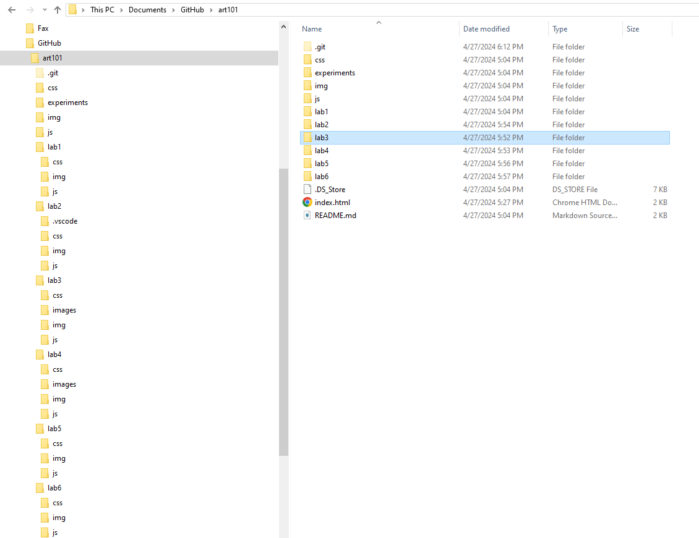

The idea of this lab is to further create a local file strucutre on my computer an add index.html files.
I was able to re-create the file stritures correctly once I followed the instructions all the way around carefully. I had also to pay close attention to my code and figure out what went wrong.
Well your are looking at the index.html file I created. Here is the file structure that I made:
Here are the images of the HTML codes for the index files: